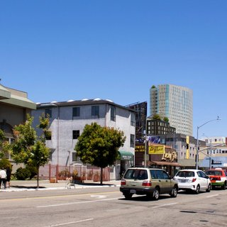
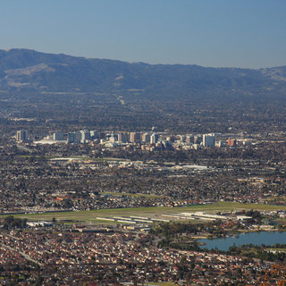
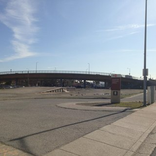
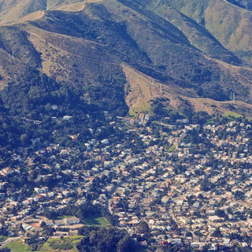
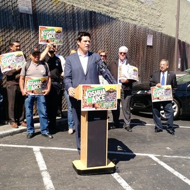

News
About
Facebook
Twitter
News
« Previous
| 1 |
Next »

Oakland Moves Forward on MacArthur Transit Village
Aug 11, 2016
Oakland Delays 416 Units in Chinatown
Aug 4, 2016
Aaron Peskin's Art of No Deal
Aug 2, 2016
Rents Begin Declining in Some Bay Area Cities
Aug 2, 2016

San Jose Eliminates Mortgage Interest Loophole in Rent Control
Aug 2, 2016
Local Profiles: Golden Chai
Aug 1, 2016

South San Francisco Urges Housing Development Near Railroad
Aug 1, 2016

Brisbane Postpones Decision on Baylands Project
Jul 29, 2016
San Jose Sues Santa Clara over Lack of Housing
Jul 29, 2016

Joshua Arce Proposes BART Station, Housing, South of Cesar Chavez
Jul 28, 2016
« Previous
| 1 |
Next »